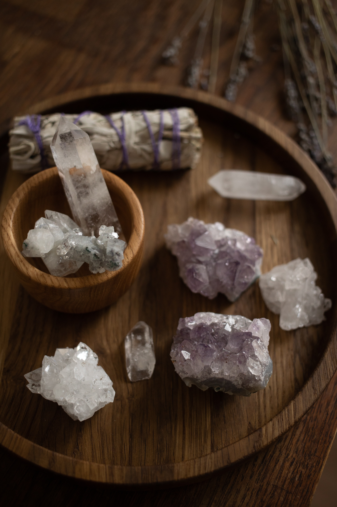

USE SEA SALT
Sea salt and water can help rid your stone of unwanted energy. If the stone is not brittle, using sea salt should be fine. However, you don't want to put a porous stone that has lots of little holes or ridges (think pyrite, hematite, etc.) in salt water since it can get damaged.
Leave the stone in the water overnight and add dried sage, basil, or lavender to enhance the bath's cleansing effect.
USE RUNNUNG WATER
Holding your crystal under running water is also a very effective cleaning method. As you do so, ask the Universe to remove all of its negativity. I usually imagine a ray of white light around the stone as I do this, cleaning it and filling it with wisdom.
USE OTHER STONES
Certain crystals associated with purification like carnelian and clear quartz are thought to actually cleanse other stones. Stack these stones on top of any crystals that need clearing, or keep them all in the same bag when you travel.
PLACE THEM UNDERNEATH THE FULL MOON
On the next full moon, place any crystals you'd like to cleanse on your windowsill to soak up some of the lunation's refreshing energy.
BATHE THEM IN MOON WATER
Moon water is exactly what it sounds like: distilled water that has been left to charge under the energy of the full moon. There are many creative ways to use it, and soaking crystals—as long as they're not too porous!—is one of them.
VISUALISE CLEANING
Visualization is the powerful practice of imagining that which you desire. The next time your crystal is in need of a refresh, hold it in your hands, close your eyes, and visualize a ray of cleansing light washing over it.
